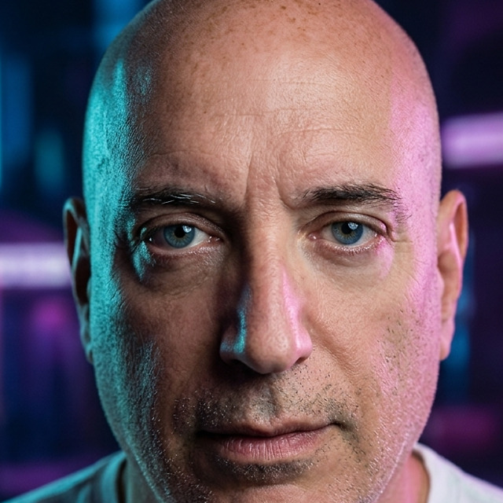

Jack Widman, Ph.D.
Mathematician. Ph.D. in mathematics, Wesleyan University, 1998.
Jack's first love in mathematics is set theory: Cantor's theory of the infinite, the axioms of ZFC, and the large cardinals beyond them. He wrote his doctoral dissertation, Groups and Algebras: Convergence and Order, in set-theoretic topology under W. W. Comfort.
He is an affiliated researcher in the foundations of computer science at Ben-Gurion University of the Negev. His work there is in type theory: he formalizes an equational theory of ∞-categories in Rocq, a proof assistant that checks every step of a proof by machine.
In 2026 he published a way to measure whether several AI models agree, built on sheaf cohomology. He proved the theorems behind it in the Lean 4 proof assistant and published the proof files.
He has built production software for 27 years, including trading and risk systems at Morgan Stanley, Credit Suisse, Bank of America and Royal Bank of Scotland. He is the author of Learning Functional Programming (O'Reilly, 2022) and was Visiting Professor of Computer Science at Wesleyan in 2025.
At Ito Agentics he looks for trading methods in stochastic analysis, random matrix theory and topology.
- Ph.D. Mathematics, Wesleyan University, 1998
- B.A. Latin and Ancient Greek, City University of New York
- US Patent 8,521,743